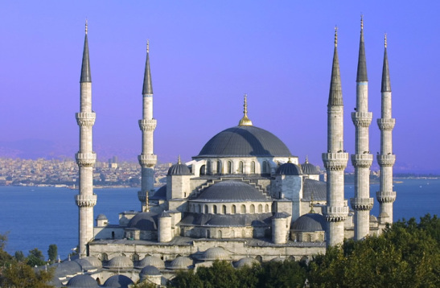
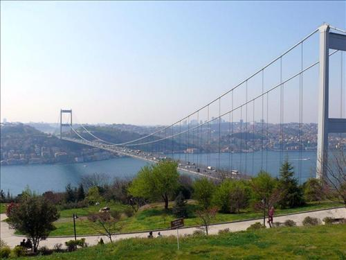
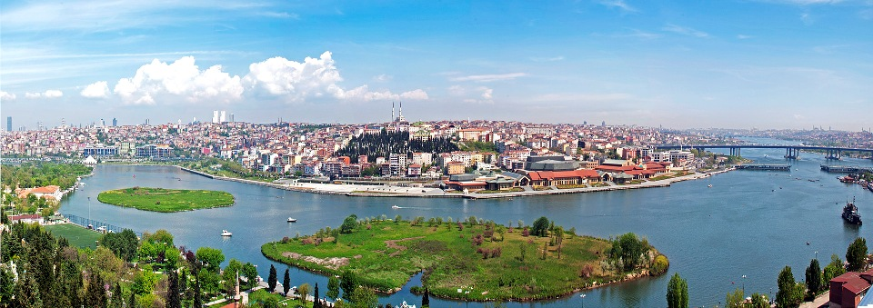

Vienīgā no mošejām, kas oriģināli tikusi uzcelta ar sešiem minaretiem.

Bosfora tilts, saukts arī par Pirmo Bosfora tiltu ir viens no diviem tiltiem Stambulā, kas šķērso Bosfora šaurumu un savieno Eiropu ar Āziju

Zelta rags ir neliels un iegarens līcis Bosfora jūras šaurumā, kas sadala Stambulas pilsētu divās daļās un veido dabīgu jūras ostu. Tas ir aptuveni 8 km garš un platākā daļa ir ieeja no Bosfora šauruma.
